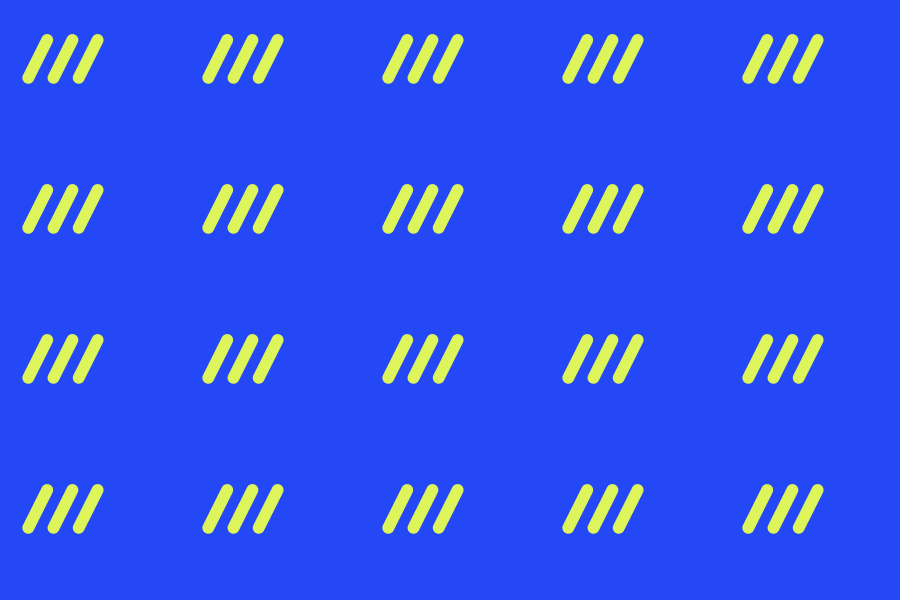

هوية شابة وواضحة لمطعم وجبات يومية. أزرق قوي، لايم منعش وكريمي دافئ؛ وثلاث حبات مائلة تتحول من رمز صغير إلى نقشة على التغليف.
Eat smart. Live easy.
الشعار والرمز
شعارات SVG بمسارات فعلية، ونسخ PNG شفافة، مع نسخ أزرق وأبيض وكريمي وأسود.

المنيو
ثلاثة أصناف: Easy Rice، Easy Wrap، Easy Salad. خيار جاج أو لحمة، بالعربي والإنكليزي.
السوشال
قالب منشور مربع وقالب ستوري، بخطوط محلية وصورة طعام تصورية مولّدة للبراند.
صور الطعام والواجهة والتغليف تصورات مولّدة لعرض اتجاه الهوية؛ تُستبدل صور الطعام بصور المنتجات الفعلية عند إطلاق المحل. قوالب التصميم قابلة للتعديل؛ مخططات قص العبوات ومقاسات الواجهة النهائية تُضبط مع المورد حسب التنفيذ. لا تتضمن النسخة أسعارًا أو قيمًا غذائية غير محددة.